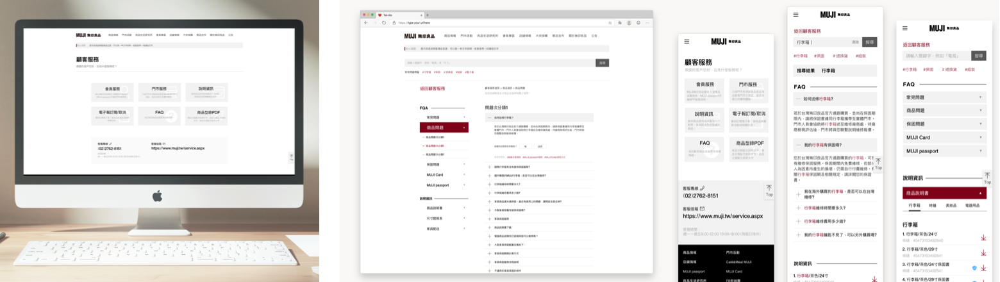

Redesign the MUJI Customer Service Page.
My role
。 Project mangement
。 Project contact person
。 UX design
Year
2019 - 2020
從2018-2019年間，以個人設計顧問名義與外部開發團隊參與此次改版專案，在這個專案中很榮幸我有機會執行下列項目：
- 內部需求訪談，了解改版目標與原因。
- 設計提案，與各部門BO、以及高層決策人一起討論。
- 規劃此次專案整體的時程。
- 顧客服務功能之流程與架構設計。
MUJI Customer Service Page
此專案執行過程中，可區分成三個階段：
- 與內部客服、行銷、與開發單位討論需求。
- 整理討論後的需求、客戶提供的資料，以及對現有網站進行資訊架構的盤點。
- 開始執行設計，並持續與MUJI內部進行設計討論與溝通，迭代出新的顧客服務頁面。